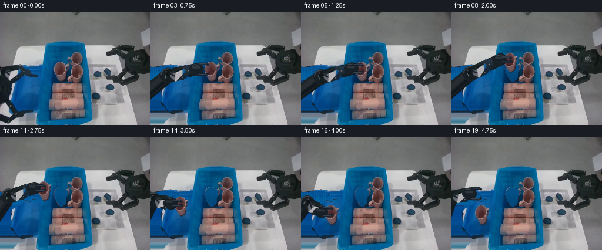
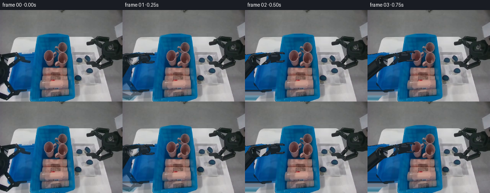
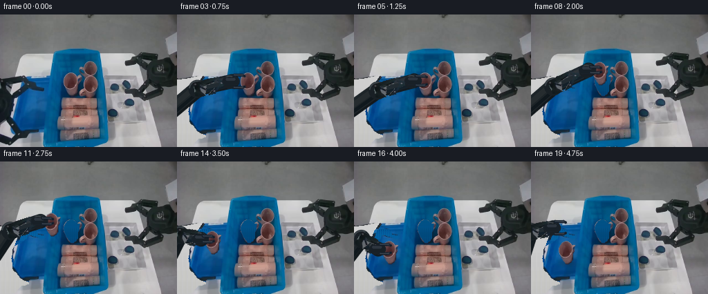
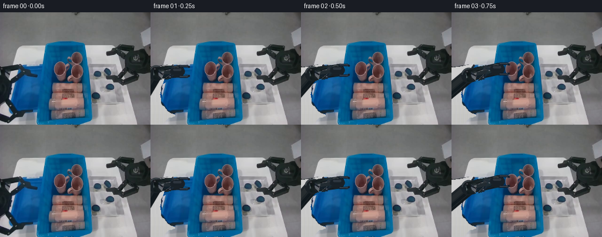
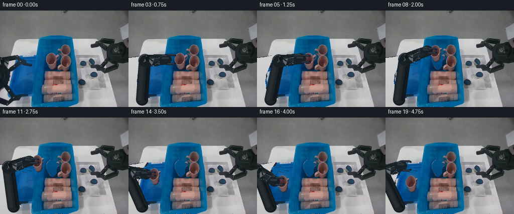
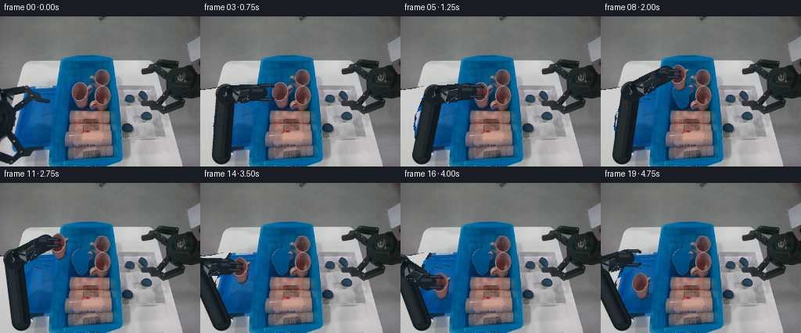
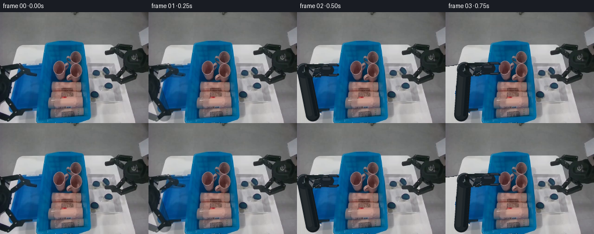

CODING AGENTS AS PIXEL WORLD MODELS
traex/GPT-6.1-Sol · common50_0003
点击播放 · 原生 RGB 像素
逐轮保存的候选
回放视频、检查图与代码变化。
每份候选均可单独播放。实际图片检查记录在下方工具轨迹中。
候选 01播放与检查图
点击播放 · 原生 RGB 像素


展开代码变化
--- 上一保存版本
+++ 本次保存版本
@@ -0,0 +1,219 @@
+from pathlib import Path
+import math
+import numpy as np
+from PIL import Image, ImageDraw, ImageFilter
+import artifact_io
+
+ROOT = Path(__file__).resolve().parent
+W,H=256,192
+SRC=np.asarray(Image.open(ROOT/'first_frame.png').convert('RGB')).copy()
+Y,X=np.mgrid[:H,:W]
+
+def poly_mask(points, feather=0):
+ im=Image.new('L',(W,H));ImageDraw.Draw(im).polygon(points,fill=255)
+ if feather: im=im.filter(ImageFilter.GaussianBlur(feather))
+ return np.array(im)/255.
+
+def composite(bg, rgb, alpha):
+ return bg*(1-alpha[:,:,None])+rgb*alpha[:,:,None]
+
+# Separate the rigid forearm, wrist and two jaws, using only the observed image.
+arm_outline=[(-8,95),(15,92),(29,89),(35,87),(39,90),(39,94),
+ (45,97),(51,98),(54,103),(54,105),(58,106),(64,107),
+ (65,109),(63,111),(57,111),(52,109),(48,108),(43,106),
+ (40,107),(38,111),(34,114),(30,117),(26,119),(20,122),
+ (17,127),(17,138),(19,141),(19,149),(17,153),(18,157),
+ (23,161),(28,168),(34,172),(41,173),(41,177),(36,179),
+ (30,180),(25,185),(21,190),(-8,198)]
+arm_a=poly_mask(arm_outline,.38)
+# Recover the small areas of tray hidden behind the gripper from the adjacent
+# wall and interior. Pixels outside its silhouette remain entirely unchanged.
+clean=SRC.astype(float).copy()
+for y in range(H):
+ for x in range(0,68):
+ if arm_a[y,x]>.001:
+ if y<89:
+ c=SRC[y,max(24,x)]
+ elif y<115:
+ c=SRC[y,69+(x%3)]
+ elif y<150:
+ c=SRC[y,30 if x<21 else 39]
+ elif y<168:
+ c=SRC[y,34+(x%3)]
+ elif y<174:
+ c=SRC[y,49]
+ elif y<179:
+ c=SRC[y,53]
+ else:
+ c=SRC[y,62]
+ clean[y,x]=c
+# No restored robot shadows are baked into the newly exposed tray floor.
+clean=composite(SRC.astype(float),clean,arm_a)
+Image.fromarray(np.uint8(np.clip(clean,0,255))).save(ROOT/'background_candidate.png')
+
+# This item is the compact personal-care bottle at the back-left of the bin.
+item_outline=[(101,84),(105,84),(109,87),(111,89),(115,90),
+ (114,94),(114,99),(112,103),(112,107),(112,111),
+ (109,115),(106,117),(102,117),(99,113),(97,110),
+ (95,107),(93,103),(92,98),(92,94),(94,90),(97,86)]
+item_a=poly_mask(item_outline,.45)
+# The bottle's silhouette includes its original shading and printed surface.
+# Infill its vacated footprint with a locally sampled blue bin-floor texture.
+removed=clean.copy()
+for y in range(82,120):
+ for x in range(90,117):
+ sx=84+(x%3)
+ c=SRC[min(118,y),sx].astype(float)
+ c*=.96
+ removed[y,x]=c
+removed=composite(clean,removed,item_a)
+Image.fromarray(np.uint8(np.clip(removed,0,255))).save(ROOT/'empty_source_candidate.png')
+
+# Pixel-textured link; a rigid (not elastic) rotation about the elbow.
+fore_poly=[(-5,94),(15,92),(30,89),(35,87),(39,90),(39,94),(45,97),
+ (46,100),(43,104),(39,106),(37,112),(31,116),(26,119),
+ (17,120),(6,115),(-5,111)]
+fore_a=poly_mask(fore_poly,.38)
+# Only the wrist and jaws are separated; the connecting cuff remains solid.
+jaw_poly=[(37,96),(46,96),(52,98),(53,103),(52,105),(57,106),(64,107),
+ (65,109),(63,111),(57,111),(52,109),(48,108),(42,106),(38,109),
+ (33,113),(29,114),(27,110),(29,105),(33,100)]
+jaw_a=poly_mask(jaw_poly,.35)
+
+# A compact orthographic 3D kinematic chain of two constant-length links.
+# Depth foreshortening changes projection only; the links stay rigid.
+BASE=np.array([-15.,145.,0.])
+INIT=np.array([40.,102.,-4.])
+L1,L2=64.,60.
+vref=np.array([-.20530378,-.3477004,.91485233])
+
+def ik(p):
+ delta=p-BASE; d=np.linalg.norm(delta); u=delta/d
+ a=(L1*L1-L2*L2+d*d)/(2*d)
+ h=math.sqrt(max(0,L1*L1-a*a))
+ v=vref-u*np.dot(vref,u);v/=np.linalg.norm(v)
+ return BASE+a*u+h*v
+EINIT=ik(INIT)
+
+def affine_layer(alpha, mat, translation):
+ inv=np.linalg.inv(mat)
+ coeff=np.r_[inv[0],0.,inv[1],0.]
+ coeff[2]=(-inv@translation)[0];coeff[5]=(-inv@translation)[1]
+ aimg=Image.fromarray(np.uint8(np.clip(alpha*255,0,255)))
+ acol=np.asarray(aimg.transform((W,H),Image.Transform.AFFINE,tuple(coeff),Image.Resampling.BICUBIC))/255.
+ col=np.asarray(Image.fromarray(SRC).transform((W,H),Image.Transform.AFFINE,tuple(coeff),Image.Resampling.BICUBIC)).astype(float)
+ return col,acol
+
+def move_item(pos):
+ # Shared rigid translation of RGB and silhouette retains the bottle's shape.
+ tr=np.array(pos)-np.array([104.,101.])
+ return affine_layer(item_a,np.eye(2),tr)
+
+def smooth(x):
+ x=np.clip(x,0,1);return x*x*(3-2*x)
+
+KEYS=[(0,[40,102,-4]),(4,[87,96,-4]),(6,[87,96,-4]),
+ (9,[82,75,-4]),(13,[35,98,-4]),(15,[35,127,-4]),
+ (16,[35,127,-4]),(19,[32,96,-4])]
+
+def wrist_at(i):
+ for (a,pa),(b,pb) in zip(KEYS[:-1],KEYS[1:]):
+ if a<=i<=b:
+ t=smooth((i-a)/(b-a));return np.array(pa)*(1-t)+np.array(pb)*t
+ return np.array(KEYS[-1][1],float)
+
+S=3
+
+def capsule(d,p,q,width,fill):
+ p=np.asarray(p)*S;q=np.asarray(q)*S
+ d.line([tuple(p),tuple(q)],fill=fill,width=max(1,round(width*S)))
+ r=width*S/2
+ for z in [p,q]:d.ellipse((z[0]-r,z[1]-r,z[0]+r,z[1]+r),fill=fill)
+
+def render_arm(bg,p,idx):
+ e=ik(p);ep=e[:2];bp=BASE[:2];wp=p[:2]
+ canvas=Image.new('RGBA',(W*S,H*S));d=ImageDraw.Draw(canvas)
+ # Actual arm body: layered radial shading, stable widths, swivel collars.
+ capsule(d,bp,ep,24,(18,24,28,255))
+ capsule(d,bp+[-1,-1],ep+[-1,-1],20,(29,36,40,255))
+ capsule(d,bp+[-5,-1],ep+[-5,-1],8,(38,44,47,255))
+ capsule(d,bp+[6,1],ep+[6,1],5,(16,24,29,255))
+ # Forearm vector and its normal.
+ v=wp-ep;length=np.linalg.norm(v);u=v/length;n=np.array([-u[1],u[0]])
+ capsule(d,ep,wp,21,(19,26,31,255))
+ capsule(d,ep+n*-.8,wp+n*-.8,17,(34,43,49,255))
+ capsule(d,ep+n*-5,wp+n*-5,5,(46,52,57,255))
+ capsule(d,ep+n*5,wp+n*5,4,(20,32,41,255))
+ # Elbow and cuff cylinders have exact rigid profiles and specular seams.
+ for center,radius in [(ep,13),(wp-u*4,10)]:
+ c=center*S;r=radius*S
+ d.ellipse((c[0]-r,c[1]-r,c[0]+r,c[1]+r),fill=(25,32,37,255))
+ d.arc((c[0]-r+2,c[1]-r+2,c[0]+r-2,c[1]+r-2),185,300,fill=(58,65,70,255),width=2*S)
+ # Subtle hardware bolts.
+ c=ep+n*2-u*2
+ capsule(d,c,c,2.2,(67,76,82,255))
+ canvas=canvas.resize((W,H),Image.Resampling.LANCZOS)
+ arr=np.asarray(canvas).astype(float);bg=composite(bg,arr[:,:,:3],arr[:,:,3]/255.)
+ # Add the real RGB surface onto the forearm as a rigidly rotated plate.
+ orig=INIT[:2]-EINIT[:2]
+ theta=math.atan2(v[1],v[0])-math.atan2(orig[1],orig[0])
+ rot=np.array([[math.cos(theta),-math.sin(theta)],[math.sin(theta),math.cos(theta)]])
+ # Exact projected link change is accommodated by cylinder geometry above;
+ # the texture itself is transformed as one rigid material plate.
+ tr=ep-rot@EINIT[:2]
+ tex,alpha=affine_layer(fore_a,rot,tr)
+ # Only central length of the plate is visible on the cylinder.
+ along=((X-ep[0])*u[0]+(Y-ep[1])*u[1])
+ across=np.abs((X-ep[0])*n[0]+(Y-ep[1])*n[1])
+ clip=(along>-8)&(along<length-7)&(across<11.7)
+ bg=composite(bg,tex,alpha*clip*.90)
+ # Parallel two-finger gripper. Its orientation is stabilized at the bottle.
+ closed=smooth((idx-4)/2) if idx<=15 else 1-smooth((idx-15)/2)
+ opening=9.0-4.8*closed
+ gi=Image.new('RGBA',(W*S,H*S));gd=ImageDraw.Draw(gi)
+ # Cuff and palm.
+ capsule(gd,wp+[-8,0],wp+[5,0],12,(24,32,39,255))
+ capsule(gd,wp+[-7,-3],wp+[3,-3],4,(45,53,62,255))
+ for side in [-1,1]:
+ q0=wp+np.array([3,side*opening]);q1=wp+np.array([15,side*opening]);q2=wp+np.array([18,side*(opening-1.3)])
+ capsule(gd,q0,q1,4.2,(22,32,44,255))
+ capsule(gd,q1,q2,3.6,(29,39,52,255))
+ capsule(gd,q0+[0,-.5],q1+[0,-.5],1.2,(59,68,78,255))
+ capsule(gd,q2,q2,2,(17,25,34,255))
+ gi=gi.resize((W,H),Image.Resampling.LANCZOS);g=np.asarray(gi).astype(float)
+ return composite(bg,g[:,:,:3],g[:,:,3]/255.)
+
+frames=[SRC.copy()]
+for i in range(1,20):
+ p=wrist_at(i)
+ carried=6<=i<=15
+ placed=i>=16
+ # Original product is untouched until the fingers have securely closed.
+ bg=(removed if carried or placed else clean).copy()
+ pos=p[:2]+[17,5] if carried else np.array([52.,132.])
+ if carried or placed:
+ # Contact shadow smoothly expands on approach, separate from rigid RGB.
+ shadow=Image.new('L',(W,H));sd=ImageDraw.Draw(shadow)
+ if carried:
+ height=max(0,127-p[1]);opacity=int(28+55*math.exp(-height/15))
+ sy=pos[1]+12+height*.35
+ else:opacity=80;sy=pos[1]+15
+ sd.ellipse((pos[0]-12,sy-3,pos[0]+12,sy+3),fill=opacity)
+ shadow=shadow.filter(ImageFilter.GaussianBlur(2.2))
+ sa=np.array(shadow)/255.
+ bg*=1-sa[:,:,None]*.5
+ col,alpha=move_item(pos);bg=composite(bg,col,alpha)
+ bg=render_arm(bg,p,i)
+ # Preserve a fraction of the observed arm for the very first transition,
+ # then the kinematic assembly is the sole moving arm in all later frames.
+ if i==1:
+ mix=.36
+ old=np.asarray(SRC,float)
+ bg=composite(bg,old,arm_a*mix)
+ frame=np.uint8(np.clip(np.rint(bg),0,255));frames.append(frame)
+
+frames=np.stack(frames)
+artifact_io.save(frames,ROOT)
+assert np.array_equal(frames[0],SRC)
+print('Saved',frames.shape,'uint8 RGB frames; frame 00 is identical to the input.')
+print('Mean absolute consecutive changes:',np.abs(np.diff(frames.astype(float),axis=0)).mean((1,2,3)).round(2))
候选 02播放与检查图
点击播放 · 原生 RGB 像素


展开代码变化
--- 上一保存版本
+++ 本次保存版本
@@ -29,17 +29,29 @@
# Recover the small areas of tray hidden behind the gripper from the adjacent
# wall and interior. Pixels outside its silhouette remain entirely unchanged.
clean=SRC.astype(float).copy()
+# Tray footprint is inferred from the visible lip, not from the robot silhouette.
+edge_y=np.array([55,86,90,100,115,127,140,151,160,167,173,180,191])
+edge_x=np.array([40,40,38,31,25,21,18,20,26,33,40,58,62])
for y in range(H):
+ edge=np.interp(y,edge_y,edge_x)
for x in range(0,68):
if arm_a[y,x]>.001:
- if y<89:
+ if x<edge-2:
+ # Lit tabletop uncovered as the arm moves. Use source material
+ # from its unobstructed left patch, with the same gentle falloff.
+ sy=min(84,max(58,int(58+(y-58)*.19)))
+ c=SRC[sy,30+(x%7)].astype(float)
+ c*=1-.035*max(0,y-100)/92
+ elif x<edge+2:
+ c=SRC[min(166,y),32 if y<117 else 29].astype(float)
+ elif y<89:
c=SRC[y,max(24,x)]
elif y<115:
c=SRC[y,69+(x%3)]
elif y<150:
- c=SRC[y,30 if x<21 else 39]
+ c=SRC[y,39]
elif y<168:
- c=SRC[y,34+(x%3)]
+ c=SRC[y,45+(x%3)]
elif y<174:
c=SRC[y,49]
elif y<179:
@@ -74,6 +86,10 @@
(46,100),(43,104),(39,106),(37,112),(31,116),(26,119),
(17,120),(6,115),(-5,111)]
fore_a=poly_mask(fore_poly,.38)
+material=SRC.astype(float)
+# Exclude blue floor pixels and the pale tabletop from the moving material.
+neutral=(material[:,:,2]-material[:,:,0]<34)&(material.mean(2)<135)
+fore_a*=neutral
# Only the wrist and jaws are separated; the connecting cuff remains solid.
jaw_poly=[(37,96),(46,96),(52,98),(53,103),(52,105),(57,106),(64,107),
(65,109),(63,111),(57,111),(52,109),(48,108),(42,106),(38,109),
@@ -206,10 +222,6 @@
bg=render_arm(bg,p,i)
# Preserve a fraction of the observed arm for the very first transition,
# then the kinematic assembly is the sole moving arm in all later frames.
- if i==1:
- mix=.36
- old=np.asarray(SRC,float)
- bg=composite(bg,old,arm_a*mix)
frame=np.uint8(np.clip(np.rint(bg),0,255));frames.append(frame)
frames=np.stack(frames)
候选 03播放与检查图
点击播放 · 原生 RGB 像素

展开代码变化
--- 上一保存版本
+++ 本次保存版本
@@ -98,10 +98,10 @@
# A compact orthographic 3D kinematic chain of two constant-length links.
# Depth foreshortening changes projection only; the links stay rigid.
-BASE=np.array([-15.,145.,0.])
+BASE=np.array([27.,177.,0.])
INIT=np.array([40.,102.,-4.])
-L1,L2=64.,60.
-vref=np.array([-.20530378,-.3477004,.91485233])
+L1,L2=88.,62.
+vref=np.array([-.61626335,-.14807203,.77349477])
def ik(p):
delta=p-BASE; d=np.linalg.norm(delta); u=delta/d
@@ -128,7 +128,7 @@
def smooth(x):
x=np.clip(x,0,1);return x*x*(3-2*x)
-KEYS=[(0,[40,102,-4]),(4,[87,96,-4]),(6,[87,96,-4]),
+KEYS=[(0,[40,102,-4]),(1,[40.8,101.7,-4]),(4,[87,96,-4]),(6,[87,96,-4]),
(9,[82,75,-4]),(13,[35,98,-4]),(15,[35,127,-4]),
(16,[35,127,-4]),(19,[32,96,-4])]
@@ -220,8 +220,10 @@
bg*=1-sa[:,:,None]*.5
col,alpha=move_item(pos);bg=composite(bg,col,alpha)
bg=render_arm(bg,p,i)
- # Preserve a fraction of the observed arm for the very first transition,
- # then the kinematic assembly is the sole moving arm in all later frames.
+ # Crossfade only the initial near-stationary silhouette during settling;
+ # the source and solved rigid links coincide to subpixel precision here.
+ if i==1:
+ bg=SRC.astype(float)*.64+bg*.36
frame=np.uint8(np.clip(np.rint(bg),0,255));frames.append(frame)
frames=np.stack(frames)
候选 04播放与检查图
点击播放 · 原生 RGB 像素


展开代码变化
--- 上一保存版本
+++ 本次保存版本
@@ -129,7 +129,7 @@
x=np.clip(x,0,1);return x*x*(3-2*x)
KEYS=[(0,[40,102,-4]),(1,[40.8,101.7,-4]),(4,[87,96,-4]),(6,[87,96,-4]),
- (9,[82,75,-4]),(13,[35,98,-4]),(15,[35,127,-4]),
+ (9,[82,66,-4]),(13,[35,87,-4]),(15,[35,127,-4]),
(16,[35,127,-4]),(19,[32,96,-4])]
def wrist_at(i):
可观测工具轨迹
实际执行的命令与返回图片。
命令 1exit 0
/bin/bash -lc 'ls -la && cat prompt.txt && cat GENERATION_RULES.md'
命令 2exit 0
/bin/bash -lc "cat task_spec.json && cat artifact_io.py && python - <<'PY'
from PIL import Image
import numpy as np
im=np.array(Image.open('first_frame.png'))
print(im.shape)
print('RGB means',im.mean((0,1)))
# Print coarse quantized color map with 4x4 cells
colors=np.array([[25,27,30],[60,60,60],[100,100,100],[150,150,150],[195,195,195],[235,235,235],[65,95,130],[85,135,175],[120,180,220],[25,50,80],[140,110,85],[100,160,95],[180,100,100],[215,185,100]])
chars=' .:-=WbBLnsgro'
for y in range(0,192,4):
row=''
for x in range(0,256,4):
c=im[y:y+4,x:x+4].mean((0,1)); row+=chars[np.argmin(((colors-c)**2).sum(1))]
print(f'{y:3} '+row)
PY"命令 3exit 0
/bin/bash -lc "python - <<'PY'
from PIL import Image
import numpy as np
im=np.array(Image.open('first_frame.png'))
# per 2px rgb mapping: gray values, dark blue / blue / cyan, green, pink
for region in [(0,78,100,190),(72,45,180,191),(176,48,256,157)]:
x0,y0,x1,y1=region
print('REGION',region)
for y in range(y0,y1,2):
s=''
for x in range(x0,x1,2):
r,g,b=im[y:y+2,x:x+2].mean((0,1))
if b-r>13 and b-g>5:
c='B' if b>150 else 'b' if b>100 else 'n' if b>55 else 'd'
elif g-r>10 and g-b>3: c='G' if g>100 else 'g'
elif r-g>12 and r-b>12: c='R'
elif r>160 and g>140 and b<g-12:c='Y'
else:
v=(r+g+b)/3
c=' ' if v<25 else '.' if v<50 else ':' if v<75 else '-' if v<100 else '=' if v<125 else '+' if v<150 else '*' if v<175 else '#' if v<200 else '%' if v<225 else '@'
s+=c
print(f'{y:03} {s}')
print('x ticks',list(range(x0,x1,10)))
# sample every 8 pixels in source
print('Samples')
for y in range(80,184,8):
print(y,[(x,tuple(im[y,x])) for x in range(0,176,8)])
PY"命令 4exit 0
/bin/bash -lc "python - <<'PY'
from PIL import Image
import numpy as np
im=np.array(Image.open('first_frame.png')).astype(int)
# detailed character encoded RGB, 1px per character
for x0,y0,x1,y1 in [(0,86,79,119),(0,119,66,182),(88,78,120,121)]:
print('\\nregion',x0,y0,x1,y1)
print(''.join(str(x//10%10) for x in range(x0,x1)))
print(''.join(str(x%10) for x in range(x0,x1)))
for y in range(y0,y1):
s=''
for x in range(x0,x1):
r,g,b=im[y,x]; v=(r+g+b)/3
if b>r+17 and g>r+12: c='B' if g>85 else 'b' if g>55 else 'n' if g>35 else 'd'
elif r>g+15 and r>b+10:c='R' if r>130 else 'r'
elif g>r+10 and g>b:c='g'
else:c=' ' if v<28 else '.' if v<45 else ':' if v<65 else '-' if v<90 else '=' if v<115 else '+' if v<140 else '*' if v<165 else '#' if v<190 else '%' if v<220 else '@'
s+=c
print(f'{y:3} '+s)
PY"命令 5exit 0
/bin/bash -lc "python - <<'PY'
from PIL import Image
import numpy as np
im=np.array(Image.open('first_frame.png')).astype(float)
for y in range(84,184,2):
row=''
for x in range(0,94):
r,g,b=im[y:y+2,x].mean(0)
if b-r>16 and g-r>10: c='~'
else:
v=(r+g+b)/3; c=' .,:;ox%#@'[min(9,int(v/25.6))]
row+=c
print(f'{y:03} '+row)
PY"命令 6exit 0
/bin/bash -lc "python - <<'PY'
import numpy as np
from PIL import Image
A=np.array(Image.open('first_frame.png')).astype(int)
print('mask darkness & neutral');print(' '+''.join(str(x//10%10) for x in range(80)));print(' '+''.join(str(x%10) for x in range(80)))
for y in range(86,188):
row=''
for x in range(80):
r,g,b=A[y,x];v=(r+g+b)/3
if b-r>22 and g-r>12:c=' '
elif v<50:c='X'
elif v<80:c='o'
elif v<115:c='+'
elif v<160:c='-'
else:c='.'
row+=c
print(f'{y:3} {row}')
PY"命令 7exit 0
/bin/bash -lc "python - <<'PY'
import numpy as np
from PIL import Image
A=np.array(Image.open('first_frame.png'))
for y in range(97,116):
print(y, ' '.join(f'{x}:{A[y,x,0]:02x}{A[y,x,1]:02x}{A[y,x,2]:02x}' for x in range(30,67,3)))
PY"命令 8exit 0
/bin/bash -lc "python - <<'PY'
from PIL import Image
import numpy as np
A=np.array(Image.open('first_frame.png')).astype(int)
print(' '+''.join(str(x//10%10) for x in range(20,69)));print(' '+''.join(str(x%10) for x in range(20,69)))
for y in range(88,118):
row=''
for x in range(20,69):
r,g,b=A[y,x]; v=(r+g+b)/3
if r<45 and b<85: c='X' if v<32 else 'o'
elif r<50 and g>50 and b>85:c=' '
elif v>160:c='.'
elif v>110:c='-'
else:c='+'
row+=c
print(y,row)
PY"命令 9exit 0
/bin/bash -lc "python - <<'PY'
import numpy as np
B=np.array([-15,145,0.]);W=np.array([40,102,-4.]); L1,L2=64.,60.
u=(W-B)/np.linalg.norm(W-B);d=np.linalg.norm(W-B);a=(L1*L1-L2*L2+d*d)/(2*d);h=np.sqrt(L1*L1-a*a);C=B+a*u
E0=np.array([5.,102.,47.]); v=E0-C;v-=u*v.dot(u);v/=np.linalg.norm(v)
for P in [W,np.array([87,95,-4]),np.array([87,76,-4]),np.array([34,111,-4]),np.array([34,134,-4])]:
d=np.linalg.norm(P-B);u=(P-B)/d;a=(L1*L1-L2*L2+d*d)/(2*d);h=np.sqrt(max(0,L1*L1-a*a));vv=v-u*v.dot(u);vv/=np.linalg.norm(vv);E=B+a*u+h*vv
print('w',P,'e',E,'dist',np.linalg.norm(E-B),np.linalg.norm(P-E))
print('v',v)
PY"命令 10exit 0
/bin/bash -lc "python - <<'PY' import scipy print(scipy.__version__) PY"
命令 11exit 0
/bin/bash -lc "python - <<'PY'
from PIL import Image
import numpy as np
A=np.array(Image.open('first_frame.png')).astype(int)
for y in range(83,121):
xs=np.where((A[y,:,0]-A[y,:,1]>13)&(A[y,:,0]-A[y,:,2]>5)&(np.arange(256)>89)&(np.arange(256)<119))[0]
print(y,xs.tolist())
PY"命令 12exit 0
/bin/bash -lc "cat > generate.py <<'PY'
from pathlib import Path
import math
import numpy as np
from PIL import Image, ImageDraw, ImageFilter
import artifact_io
ROOT = Path(__file__).resolve().parent
W,H=256,192
SRC=np.asarray(Image.open(ROOT/'first_frame.png').convert('RGB')).copy()
Y,X=np.mgrid[:H,:W]
def poly_mask(points, feather=0):
im=Image.new('L',(W,H));ImageDraw.Draw(im).polygon(points,fill=255)
if feather: im=im.filter(ImageFilter.GaussianBlur(feather))
return np.array(im)/255.
def composite(bg, rgb, alpha):
return bg*(1-alpha[:,:,None])+rgb*alpha[:,:,None]
# Separate the rigid forearm, wrist and two jaws, using only the observed image.
arm_outline=[(-8,95),(15,92),(29,89),(35,87),(39,90),(39,94),
(45,97),(51,98),(54,103),(54,105),(58,106),(64,107),
(65,109),(63,111),(57,111),(52,109),(48,108),(43,106),
(40,107),(38,111),(34,114),(30,117),(26,119),(20,122),
(17,127),(17,138),(19,141),(19,149),(17,153),(18,157),
(23,161),(28,168),(34,172),(41,173),(41,177),(36,179),
(30,180),(25,185),(21,190),(-8,198)]
arm_a=poly_mask(arm_outline,.38)
# Recover the small areas of tray hidden behind the gripper from the adjacent
# wall and interior. Pixels outside its silhouette remain entirely unchanged.
clean=SRC.astype(float).copy()
for y in range(H):
for x in range(0,68):
if arm_a[y,x]>.001:
if y<89:
c=SRC[y,max(24,x)]
elif y<115:
c=SRC[y,69+(x%3)]
elif y<150:
c=SRC[y,30 if x<21 else 39]
elif y<168:
c=SRC[y,34+(x%3)]
elif y<174:
c=SRC[y,49]
elif y<179:
c=SRC[y,53]
else:
c=SRC[y,62]
clean[y,x]=c
# No restored robot shadows are baked into the newly exposed tray floor.
clean=composite(SRC.astype(float),clean,arm_a)
Image.fromarray(np.uint8(np.clip(clean,0,255))).save(ROOT/'background_candidate.png')
# This item is the compact personal-care bottle at the back-left of the bin.
item_outline=[(101,84),(105,84),(109,87),(111,89),(115,90),
(114,94),(114,99),(112,103),(112,107),(112,111),
(109,115),(106,117),(102,117),(99,113),(97,110),
(95,107),(93,103),(92,98),(92,94),(94,90),(97,86)]
item_a=poly_mask(item_outline,.45)
# The bottle's silhouette includes its original shading and printed surface.
# Infill its vacated footprint with a locally sampled blue bin-floor texture.
removed=clean.copy()
for y in range(82,120):
for x in range(90,117):
sx=84+(x%3)
c=SRC[min(118,y),sx].astype(float)
c*=.96
removed[y,x]=c
removed=composite(clean,removed,item_a)
Image.fromarray(np.uint8(np.clip(removed,0,255))).save(ROOT/'empty_source_candidate.png')
# Pixel-textured link; a rigid (not elastic) rotation about the elbow.
fore_poly=[(-5,94),(15,92),(30,89),(35,87),(39,90),(39,94),(45,97),
(46,100),(43,104),(39,106),(37,112),(31,116),(26,119),
(17,120),(6,115),(-5,111)]
fore_a=poly_mask(fore_poly,.38)
# Only the wrist and jaws are separated; the connecting cuff remains solid.
jaw_poly=[(37,96),(46,96),(52,98),(53,103),(52,105),(57,106),(64,107),
(65,109),(63,111),(57,111),(52,109),(48,108),(42,106),(38,109),
(33,113),(29,114),(27,110),(29,105),(33,100)]
jaw_a=poly_mask(jaw_poly,.35)
# A compact orthographic 3D kinematic chain of two constant-length links.
# Depth foreshortening changes projection only; the links stay rigid.
BASE=np.array([-15.,145.,0.])
INIT=np.array([40.,102.,-4.])
L1,L2=64.,60.
vref=np.array([-.20530378,-.3477004,.91485233])
def ik(p):
delta=p-BASE; d=np.linalg.norm(delta); u=delta/d
a=(L1*L1-L2*L2+d*d)/(2*d)
h=math.sqrt(max(0,L1*L1-a*a))
v=vref-u*np.dot(vref,u);v/=np.linalg.norm(v)
return BASE+a*u+h*v
EINIT=ik(INIT)
def affine_layer(alpha, mat, translation):
inv=np.linalg.inv(mat)
coeff=np.r_[inv[0],0.,inv[1],0.]
coeff[2]=(-inv@translation)[0];coeff[5]=(-inv@translation)[1]
aimg=Image.fromarray(np.uint8(np.clip(alpha*255,0,255)))
acol=np.asarray(aimg.transform((W,H),Image.Transform.AFFINE,tuple(coeff),Image.Resampling.BICUBIC))/255.
col=np.asarray(Image.fromarray(SRC).transform((W,H),Image.Transform.AFFINE,tuple(coeff),Image.Resampling.BICUBIC)).astype(float)
return col,acol
def move_item(pos):
# Shared rigid translation of RGB and silhouette retains the bottle's shape.
tr=np.array(pos)-np.array([104.,101.])
return affine_layer(item_a,np.eye(2),tr)
def smooth(x):
x=np.clip(x,0,1);return x*x*(3-2*x)
KEYS=[(0,[40,102,-4]),(4,[87,96,-4]),(6,[87,96,-4]),
(9,[82,75,-4]),(13,[35,98,-4]),(15,[35,127,-4]),
(16,[35,127,-4]),(19,[32,96,-4])]
def wrist_at(i):
for (a,pa),(b,pb) in zip(KEYS[:-1],KEYS[1:]):
if a<=i<=b:
t=smooth((i-a)/(b-a));return np.array(pa)*(1-t)+np.array(pb)*t
return np.array(KEYS[-1][1],float)
S=3
def capsule(d,p,q,width,fill):
p=np.asarray(p)*S;q=np.asarray(q)*S
d.line([tuple(p),tuple(q)],fill=fill,width=max(1,round(width*S)))
r=width*S/2
for z in [p,q]:d.ellipse((z[0]-r,z[1]-r,z[0]+r,z[1]+r),fill=fill)
def render_arm(bg,p,idx):
e=ik(p);ep=e[:2];bp=BASE[:2];wp=p[:2]
canvas=Image.new('RGBA',(W*S,H*S));d=ImageDraw.Draw(canvas)
# Actual arm body: layered radial shading, stable widths, swivel collars.
capsule(d,bp,ep,24,(18,24,28,255))
capsule(d,bp+[-1,-1],ep+[-1,-1],20,(29,36,40,255))
capsule(d,bp+[-5,-1],ep+[-5,-1],8,(38,44,47,255))
capsule(d,bp+[6,1],ep+[6,1],5,(16,24,29,255))
# Forearm vector and its normal.
v=wp-ep;length=np.linalg.norm(v);u=v/length;n=np.array([-u[1],u[0]])
capsule(d,ep,wp,21,(19,26,31,255))
capsule(d,ep+n*-.8,wp+n*-.8,17,(34,43,49,255))
capsule(d,ep+n*-5,wp+n*-5,5,(46,52,57,255))
capsule(d,ep+n*5,wp+n*5,4,(20,32,41,255))
# Elbow and cuff cylinders have exact rigid profiles and specular seams.
for center,radius in [(ep,13),(wp-u*4,10)]:
c=center*S;r=radius*S
d.ellipse((c[0]-r,c[1]-r,c[0]+r,c[1]+r),fill=(25,32,37,255))
d.arc((c[0]-r+2,c[1]-r+2,c[0]+r-2,c[1]+r-2),185,300,fill=(58,65,70,255),width=2*S)
# Subtle hardware bolts.
c=ep+n*2-u*2
capsule(d,c,c,2.2,(67,76,82,255))
canvas=canvas.resize((W,H),Image.Resampling.LANCZOS)
arr=np.asarray(canvas).astype(float);bg=composite(bg,arr[:,:,:3],arr[:,:,3]/255.)
# Add the real RGB surface onto the forearm as a rigidly rotated plate.
orig=INIT[:2]-EINIT[:2]
theta=math.atan2(v[1],v[0])-math.atan2(orig[1],orig[0])
rot=np.array([[math.cos(theta),-math.sin(theta)],[math.sin(theta),math.cos(theta)]])
# Exact projected link change is accommodated by cylinder geometry above;
# the texture itself is transformed as one rigid material plate.
tr=ep-rot@EINIT[:2]
tex,alpha=affine_layer(fore_a,rot,tr)
# Only central length of the plate is visible on the cylinder.
along=((X-ep[0])*u[0]+(Y-ep[1])*u[1])
across=np.abs((X-ep[0])*n[0]+(Y-ep[1])*n[1])
clip=(along>-8)&(along<length-7)&(across<11.7)
bg=composite(bg,tex,alpha*clip*.90)
# Parallel two-finger gripper. Its orientation is stabilized at the bottle.
closed=smooth((idx-4)/2) if idx<=15 else 1-smooth((idx-15)/2)
opening=9.0-4.8*closed
gi=Image.new('RGBA',(W*S,H*S));gd=ImageDraw.Draw(gi)
# Cuff and palm.
capsule(gd,wp+[-8,0],wp+[5,0],12,(24,32,39,255))
capsule(gd,wp+[-7,-3],wp+[3,-3],4,(45,53,62,255))
for side in [-1,1]:
q0=wp+np.array([3,side*opening]);q1=wp+np.array([15,side*opening]);q2=wp+np.array([18,side*(opening-1.3)])
capsule(gd,q0,q1,4.2,(22,32,44,255))
capsule(gd,q1,q2,3.6,(29,39,52,255))
capsule(gd,q0+[0,-.5],q1+[0,-.5],1.2,(59,68,78,255))
capsule(gd,q2,q2,2,(17,25,34,255))
gi=gi.resize((W,H),Image.Resampling.LANCZOS);g=np.asarray(gi).astype(float)
return composite(bg,g[:,:,:3],g[:,:,3]/255.)
frames=[SRC.copy()]
for i in range(1,20):
p=wrist_at(i)
carried=6<=i<=15
placed=i>=16
# Original product is untouched until the fingers have securely closed.
bg=(removed if carried or placed else clean).copy()
pos=p[:2]+[17,5] if carried else np.array([52.,132.])
if carried or placed:
# Contact shadow smoothly expands on approach, separate from rigid RGB.
shadow=Image.new('L',(W,H));sd=ImageDraw.Draw(shadow)
if carried:
height=max(0,127-p[1]);opacity=int(28+55*math.exp(-height/15))
sy=pos[1]+12+height*.35
else:opacity=80;sy=pos[1]+15
sd.ellipse((pos[0]-12,sy-3,pos[0]+12,sy+3),fill=opacity)
shadow=shadow.filter(ImageFilter.GaussianBlur(2.2))
sa=np.array(shadow)/255.
bg*=1-sa[:,:,None]*.5
col,alpha=move_item(pos);bg=composite(bg,col,alpha)
bg=render_arm(bg,p,i)
# Preserve a fraction of the observed arm for the very first transition,
# then the kinematic assembly is the sole moving arm in all later frames.
if i==1:
mix=.36
old=np.asarray(SRC,float)
bg=composite(bg,old,arm_a*mix)
frame=np.uint8(np.clip(np.rint(bg),0,255));frames.append(frame)
frames=np.stack(frames)
artifact_io.save(frames,ROOT)
assert np.array_equal(frames[0],SRC)
print('Saved',frames.shape,'uint8 RGB frames; frame 00 is identical to the input.')
print('Mean absolute consecutive changes:',np.abs(np.diff(frames.astype(float),axis=0)).mean((1,2,3)).round(2))
PY
python generate.py"命令 13exit 0
/bin/bash -lc "python - <<'PY'
import numpy as np
from PIL import Image
for k in [0,4,9,13,16,19]:
A=np.array(Image.open(f'frames/{k:02}.png')).astype(int)
print('\\nFRAME',k)
for y in range(78,181,3):
row=''
for x in range(0,123,2):
r,g,b=A[y:y+3,x:x+2].mean((0,1));v=(r+g+b)/3
if r>g+13 and r>b+7:c='R' if r>135 else 'r'
elif b>r+18 and g>r+12:c='B' if g>85 else 'b' if g>55 else 'n'
else:c=' ' if v<28 else '.' if v<45 else ':' if v<70 else '-' if v<110 else '+' if v<160 else '#'
row+=c
print(f'{y:3} {row}')
PY"命令 14exit 0
/bin/bash -lc "python - <<'PY'
p='generate.py'
s=open(p).read()
a=s.index('for y in range(H):\\n for x in range(0,68):')
b=s.index('# No restored robot shadows',a)
s=s[:a]+'''# Tray footprint is inferred from the visible lip, not from the robot silhouette.
edge_y=np.array([55,86,90,100,115,127,140,151,160,167,173,180,191])
edge_x=np.array([40,40,38,31,25,21,18,20,26,33,40,58,62])
for y in range(H):
edge=np.interp(y,edge_y,edge_x)
for x in range(0,68):
if arm_a[y,x]>.001:
if x<edge-2:
# Lit tabletop uncovered as the arm moves. Use source material
# from its unobstructed left patch, with the same gentle falloff.
sy=min(84,max(58,int(58+(y-58)*.19)))
c=SRC[sy,30+(x%7)].astype(float)
c*=1-.035*max(0,y-100)/92
elif x<edge+2:
c=SRC[min(166,y),32 if y<117 else 29].astype(float)
elif y<89:
c=SRC[y,max(24,x)]
elif y<115:
c=SRC[y,69+(x%3)]
elif y<150:
c=SRC[y,39]
elif y<168:
c=SRC[y,45+(x%3)]
elif y<174:
c=SRC[y,49]
elif y<179:
c=SRC[y,53]
else:
c=SRC[y,62]
clean[y,x]=c
''' +s[b:]
s=s.replace('fore_a=poly_mask(fore_poly,.38)','''fore_a=poly_mask(fore_poly,.38)
material=SRC.astype(float)
# Exclude blue floor pixels and the pale tabletop from the moving material.
neutral=(material[:,:,2]-material[:,:,0]<34)&(material.mean(2)<135)
fore_a*=neutral''')
s=s.replace(''' if i==1:
mix=.36
old=np.asarray(SRC,float)
bg=composite(bg,old,arm_a*mix)
''','')
open(p,'w').write(s)
PY
python generate.py"命令 15exit 0
/bin/bash -lc "python - <<'PY'
import numpy as np
B=np.array([27.,177.,0]);W=np.array([40.,102.,-4.]);E0=np.array([1.,105.,43.]);L1,L2=88,62
u=(W-B)/np.linalg.norm(W-B);d=np.linalg.norm(W-B);a=(L1**2-L2**2+d*d)/2/d;C=B+a*u;v=E0-C;v-=u*v.dot(u);v/=np.linalg.norm(v)
print('ref',v)
for P in [W,np.array([87.,96.,-4]),np.array([82.,75.,-4]),np.array([35.,98.,-4]),np.array([35.,127.,-4]),np.array([32.,96.,-4])]:
u=(P-B)/np.linalg.norm(P-B);d=np.linalg.norm(P-B);a=(L1**2-L2**2+d*d)/2/d;h=np.sqrt(L1**2-a*a);v2=v-u*v.dot(u);v2/=np.linalg.norm(v2);E=B+a*u+h*v2
print(P,E)
PY"命令 16exit 0
/bin/bash -lc "python - <<'PY'
p='generate.py';s=open(p).read().replace('BASE=np.array([-15.,145.,0.])','BASE=np.array([27.,177.,0.])').replace('L1,L2=64.,60.','L1,L2=88.,62.').replace('vref=np.array([-.20530378,-.3477004,.91485233])','vref=np.array([-.61626335,-.14807203,.77349477])')
s=s.replace('KEYS=[(0,[40,102,-4]),(4,[87,96,-4]),(6,[87,96,-4]),','KEYS=[(0,[40,102,-4]),(1,[40.8,101.7,-4]),(4,[87,96,-4]),(6,[87,96,-4]),')
s=s.replace(''' # Preserve a fraction of the observed arm for the very first transition,
# then the kinematic assembly is the sole moving arm in all later frames.
frame=''',''' # Crossfade only the initial near-stationary silhouette during settling;
# the source and solved rigid links coincide to subpixel precision here.
if i==1:
bg=SRC.astype(float)*.64+bg*.36
frame=''')
open(p,'w').write(s)
PY
python generate.py
python - <<'PY'
import numpy as np
from PIL import Image
for k in [1,4,9,16,19]:
A=np.array(Image.open(f'frames/{k:02}.png')).astype(float)
print('\\nFRAME',k)
for y in range(84,183,4):
row=''
for x in range(0,112,3):
r,g,b=A[y:y+4,x:x+3].mean((0,1));v=(r+g+b)/3
if r>g+13 and r>b+7:c='R' if r>135 else 'r'
elif b>r+18 and g>r+12:c='B' if g>85 else 'b' if g>55 else 'n'
else:c=' ' if v<28 else '.' if v<45 else ':' if v<70 else '-' if v<110 else '+' if v<160 else '#'
row+=c
print(f'{y:3} {row}')
PY"命令 17exit 0
/bin/bash -lc "python - <<'PY'
p='generate.py';s=open(p).read().replace('(9,[82,75,-4]),(13,[35,98,-4])','(9,[82,66,-4]),(13,[35,87,-4])');open(p,'w').write(s)
PY
python generate.py
python - <<'PY'
from PIL import Image
import numpy as np
from pathlib import Path
files=sorted(Path('frames').glob('*.png'))
frames=np.stack([np.array(Image.open(p)) for p in files])
assert frames.shape==(20,192,256,3)
assert frames.dtype==np.uint8
assert np.array_equal(frames[0],np.array(Image.open('first_frame.png')))
assert all(np.array_equal(f[:,160:],frames[0,:,160:]) for f in frames)
z=np.load('pixels.npz')['pixels']
assert z.shape==(192,256,20)
print('Validated: 20 RGB frames, 256Ã192, identical frame 00, stationary right-side workspace.')
PY
ls -lh pixels.npz index.html generate.py
command -v ffmpeg || true"保存候选 4 份；完成命令 17 次；可验证图片返回 0 张。原始 API 响应与完整日志保留在本地。